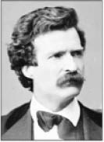
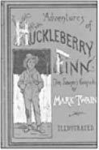

Mark Twain, Fotoğrafçı Mathew Brady, 1871
Mark Twain (1835-1910)
“Yağmur duasına çıkmadan önce meteorolojinin kayıtlarını karıştırmak her zaman faydalıdır.”
Başlıca yapıtları; Tom Savoyer’ın Maceraları, Huckleberry Finn’in Maceraları, Adem ile Havva’nın Cennet Günlüğü, Çalınan Taç, Yurtdışında Bir Serseri, Mississippi’de Yaşam olan ünlü Amerikalı mizah yazarı, 30 Kasım 1835’te küçük bir köyde doğdu.
Asıl adı Samuel Langhorne Clemens’tir. On bir yaşında babasını kaybedince bir matbaada çırak olarak çalışmaya başladı. Ardından ağabeyinin çıkardığı yerel bir gazetede dizgiciliğe başlayan Twain, bu arada mizah yazıları da yazdı.
Dizgicilik işini sıkıcı bulduğundan kaptanlığa merak saldı. Mississippi Nehri’nde buharlı gemilerde yaptığı kaptanlığı Kuzey-Güney savaşları nedeniyle bırakmak zorunda kaldı.
Ancak bu yaptığı işi öylesine beğenmişti ki, gazete muhabirliği yapmaya başladığı dönemde geminin dibe oturmaması için gerekli su derinliğini ölçen bir gemici terimi olan adını (İngilizce, “ikiyi işaretle”) ilk kez mizahi bir gezi yazısında kullandı.
Yazdığı ünlü yapıtların ardından, dizgi makinesine yaptığı yatırım iflası ile sonuçlanınca uzun yıllar borçlarını ödeyebilmek için uğraştı. Kitaplarının gelirinin yanı sıra birçok ülkede yaptığı konuşmalarla borçlarını ödeyebildi.

İlk konferansından önce dinleyiciler arasına arkadaşlarını yerleştirirdi. Amacı onların atacağı kahkahalarla diğer dinleyicileri etkilemekti. Fakat bu önleme gerek kalmıyor ve ünlü mizah ustası daha ilk cümlesinde istediği sonuca ulaşıyordu:
“Julius Caesar (Sezar) öldü. Shakespeare öldü. Napol-yon artık yaşamıyor. Abraham Lincoln de öldü... Ben de kendimi iyi hissetmiyorum.”
Sonraki konferansını vereceği salonun kapısına büyük harflerle şu yazıyı astırdı: “Konuşma saat dokuzda başlar, saat sekizde kapılar kapanır.” Yazı etkisini göstermiş ve salonun dolmasıyla kapılar saat yedide kapanmıştı.
Yazmaya başladığı otobiyografisi, ünlü yazarın 1910 yılında hayata gözlerini kapamasıyla yarım kalmıştır.
Mark Twain bir gün trenle yolculuk yaparken bulunduğu kompartımandaki yolcular birbiri ardına akıl almaz öyküler anlatmaya başlarlar.
Mantık dışı bu öyküleri bir süre dinledikten sonra ünlü mizah yazarı dayanamayıp söze karışır:
“Arkadaşlar gördüğüm kadarıyla akıl almaz öyküler anlatmakta ustasınız. Sizin bu marifetiniz bana doğduğum şehirde başımdan geçen bir macerayı hatırlattı. Bir gece şehir halkı büyük bir yangınla yataklarından fırlamıştı. Şehrin yerlilerinden ihtiyar Hankinson adında bir adam yanmakta olan bir evin dördüncü katında mahsur kalmıştı.
Şehirde bulunan itfaiye merdivenlerinden hiçbiri onun bulunduğu yere ulaşabilecek uzunlukta olmadığından herkes zavallı adama acıyarak bakıyordu. Herkes dehşete kapılmış olarak birbirine bakarken çevremde bulunanlara ‘Bir ip getirin!’ diye bağırdım.
Gelen ipin bir ucunu büyük bir maharetle ihtiyar adama savurdum. Benim attığım ipi yakalayan ihtiyar adama ‘Bunu beline bağlayıp düğümle!’ diye seslendim. İhtiyar Hankinson söylediklerimi yaptı ve böylece ben de onu aşağıya çekebildim.”
Bir komşusundan ödünç kitap istemeye giden Mark Twain’e komşusu:
“Elbette istediğin kitabı alabilirsin” der. “Ancak bir şartım var, kitabımı evimin dışına çıkarmamalısın.”
Ertesi hafta çim biçme makinesini ödünç istemeye gelen aynı komşusuna bu kez Twain neşeli bir şekilde “Hay hay alabilirsin dostum, fakat yeni koyduğum bir kural gereği sadece benim çimenlerimde kullanabilirsin” der.
Mark Twain konferans vermek için bir şehre gider. Tıraş olmak için girdiği berber, tıraş esnasında, “Eğer bilet almadıysanız, Mark Twain’in konferansını ayakta dinlemek zorunda kalacaksınız” der.
Ünlü yazar Twain “Hiç önemli değil” der gülümseyerek “Ben o adamın konferansında hep ayakta dururum zaten.”
Bir gün Mark Twain bir gazeteciden telgraf alır: “Buralarda öldüğünüze dair söylentiler var.”
Mark Twain, karşılık olarak şöyle bir telgraf çektirir: “Söylenti fazla abartılı!”
Yine bir gün tren yolculuğunda Mark Twain, karşısında oturan adamın kendi kitabını okuduğunu görür. Sohbet etmeye başladıklarında ise adamın kendisini tanımadığını anlayarak sorar: “Biraz önce okuduğunuz kitabı nasıl buldunuz, beğendiniz mi?”
Adamın, “Okumamış olmak için 100 dolar verirdim” cevabı karşısında oldukça şaşıran Twain “Neden? O kadar kötü mü?” diye sorar.
Adam memnuniyetini şöyle ifade eder: “Hayır, tam tersine ilk kez okumanın zevkini yeniden tadabilmek için.”
Mark Twain’den...
“Tekneler hız ve rüzgâr açısından eşit olduğunda, mürettebatı iyi olan yarışı kazanır.”
“Doğru kelimeyle hemen hemen doğru kelime arasındaki fark, ateşle ateş böceği arasındaki farktır.”
“Bir kedi kızgın bir sobanın üstüne oturursa, bir daha kızgın bir sobanın üstüne asla oturmayacaktır. O kedi artık soğuk bir sobanın üstüne bile asla oturmayacaktır. O kedi sobaları kötü bir deneyimle eşleştirecektir ve şöyle diyecektir: Bir daha asla!”
“Cennet ve cehennemle ilgili ileri geri laf söylemek istemem, çünkü ikisinde de dostlarım var!”
“Herkes aya benzer... Karanlık bir tarafı vardır ve onu kimseye göstermez.”
“Gök gürültüsü iyidir, gök gürültüsü korkutur, fakat asıl işi yapan şimşektir... “
“insanlar arasında fikir ayrılıkları olmasaydı at yarışları da olmazdı.”
“Hayatımda pek çok sorun vardı ve çoğu asla var olmadı.”